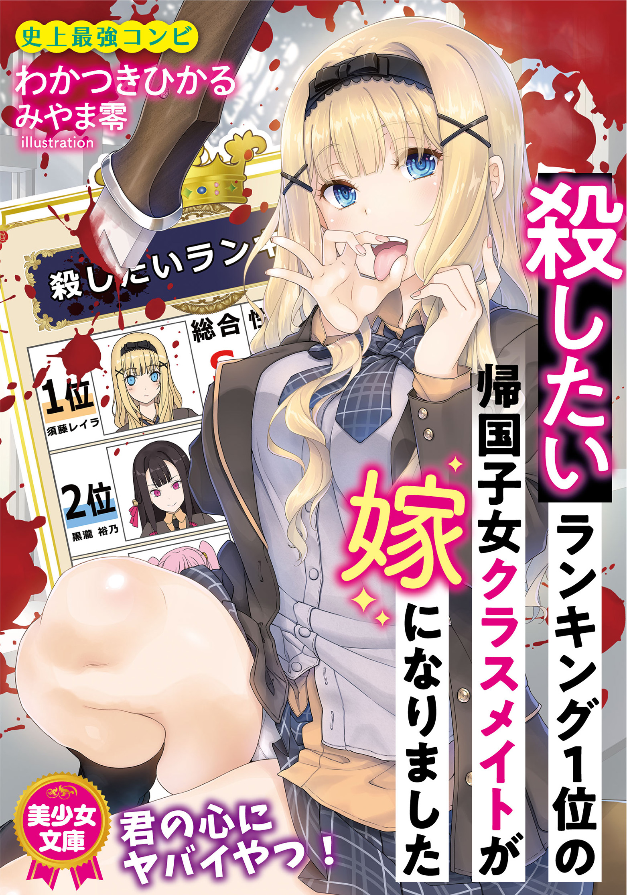

A Returnee Classmate, Number One On The List Of People I Want To Kill, Became My Wife
Novel Info's
Status: Completed/Finished
Genre: Adult, Ecchi, Romance, School Life, Seinen
Author: Wakatsuki Hikaru
Illustrator: Miyama-Zero
Volumes: 1
Original Publisher: France Shoin
English Publisher: N/A
Fan Translation: I Cant Read JapaneseTL
Description/Sypnosis
“I like you. Kageo!”
At his home’s entrance, the girl ranked number one on the list of people he wanted to kill pushed him down and was sucking his penis
Just, what the hell is this situation!?
Although he saved her from falling down the stairs, a sudden expression of love with a fellatio is frightening. Kageo wanted to run away immediately.
“No problem-desu. I will suck more-desu”
“No, Sudou-san, things are already getting bad, though”
Is Sudou-san, a slut?
No way. Even though she looks so innocent
“Kageo, annoying!! I like you, true!! Believe-desu!”
Lalya made a sulky face. Because she was really beautiful, there was a punch when she got angry and it was overwhelming.
“I’m sorry!”
He apologized and ejaculated at the same time.
Download Links
Epub & Pdf